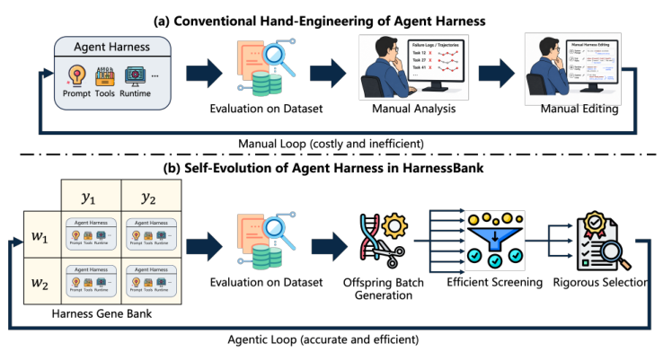
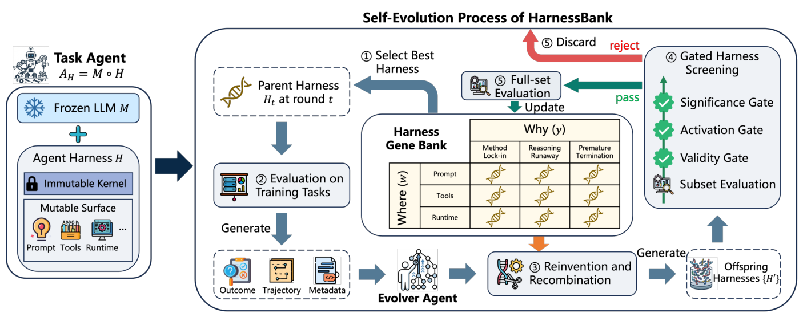

HarnessBank 深度调研笔记
速览
| 项 | 内容 |
|---|---|
| 一句话 | 任务 agent + 独立 evolver agent 的 harness 自进化框架：语义基因库按 (改哪里, 为什么改) 归档高质 harness 防搜索坍缩，四道门控筛掉无效/未激活/不显著/无增益的子代——七个 agent 基准 +5.1%~15.4% |
| 冻结 | 任务模型权重（主实验 Qwen3.6-27B；跨模型含 397B / Gemini） |
| 演化 | harness 整体表面：prompt / 知识 / runtime / config（核心 kernel 不可变） |
| 领域 | 通用 LLM agent（Terminal-Bench 2 等），不是机器人——但它是机器人侧 harness 自进化（Zetta/SHAPER/RoboFoundry/AdaHVLA）的方法论源头之一 |

① 动机：自进化的三个失败模式
- 搜索坍缩：贪心选择只留单一线路，把"高质但语义不同"的 harness 丢掉，也可能记住个别训练任务而非修复失败机制；
- 评估噪声：agent 结果在临界任务上波动，沙箱崩溃/验证器超时等基建问题被误记为 harness 改动的效果；
- 过拟合与未激活：看似成功的补丁可能在执行中从未被触发，或只对筛选用任务过拟合。
② 架构：双 agent + 基因库

- 任务 agent 在当前 harness 下执行环境任务；evolver agent 分析执行轨迹、诊断复现失败机制、生成子代 harness（不碰模型参数）。
- Harness Gene Bank（HGB）：每个库 cell 按语义坐标索引——
where（改动作用在哪个 harness 组件）×why（针对哪种失败病理）。不同失败机制的 harness 都保留在库中，evolver 可以：从失败轨迹再造机制，或跨 cell 重组兼容机制；质量偏置的父代选择利用最强线路，语义库保住贪心进化会丢的互补解。
③ 机制：四道门控（Gated Harness Screening）
子代 harness ├─ ① 有效性门：剔除被基建故障污染的评估 ├─ ② 激活门：验证补丁在执行中真的被触发 ├─ ③ 配对显著性门：增益与任务级波动可区分（~2σ） └─ ④ 增益门：必须胜过父代 → 过四门才上全量训练集评估 → 竞争入基因库
这是把"可统计验证的筛选"引入 harness 自进化——与 RAX 的"无人值守成功才入库"、ASPIRE 的 verifier 复现同一哲学，但做成了显式的统计协议。
④ 数据与结果
- 七个多样 agent 基准（含 Terminal-Bench 2 等）：一致提升 +5.1% ~ +15.4%；
- 跨模型实验：进化出的 harness 是模型特异的而非普适最优——可迁移的是"失败诊断 + 结构化搜索 + 验证"这套流程本身；
- 相关定位：对照 GEPA（prompt 进化）与 Darwin Gödel Machine（开放自改），HarnessBank 把优化面扩展到全 harness 表面。
④A 主结果对比（论文 Table 1，LLM-agent 基准，Test Pass@1，tex 已验）
| 基准 | 领域 | Vanilla | Evolved | Δ |
|---|---|---|---|---|
| TB2 | 终端操作 | 36.1 | 45.4 | +9.3 |
| LiveCode | 代码生成 | 58.1 | 71.8 | +13.7 |
| Omni-MATH | 数学推理 | 54.3 | 66.0 | +11.7 |
| AppWorld | App/API 控制 | 41.3 | 56.7 | +15.4 |
| SWE-bench | 仓库级修 bug | 47.4 | 52.6 | +5.1 |
训练期 Pass@1 同步提升（如 LiveCode 64.6→85.6）；Pass@3 亦有 5~13 个点增益；knowledge retention 37%~148%。
④B 核心消融（Table 3 门控消融 + Table 2 跨模型匹配律，tex 已验）
- w/o 2σ 精英过滤：false elites +2，收敛轮数 >20（cap）——没有统计门控，进化不收敛；
- w/o confirm + 2σ：Pass@1 -1.6，false elites +3；
- 跨模型匹配律：同一 harness 迁到不同底座/数学域，增益由底座"主导失败模式"预测（如 397B 在 AppWorld 是 Careless → 换失败模式匹配的 harness 变体 +13.6；错配变体只有 +0.2/+1.2）。
⑤ 信息流（一轮进化）
任务 agent 在当前 harness 下跑任务 → 执行轨迹 → evolver 诊断复现失败机制 → 生成子代 harness（改 prompt/知识/runtime/config） → 小子集评估 → 四道门控 → 过门者上全量评估 → 质量竞争入库（按 where×why 归档） → 下一轮：再造 or 跨 cell 重组
⑥ 例子
补丁类型如 Verify-Finalize（提交前自检，抑制过早收束）：如果轨迹显示 agent 反复"提前宣布完成"，evolver 生成"finalize 前强制 verifier 检查"的 harness 变体；激活门会验证这条补丁路径真的被执行到了，显著性门验证加了它确实赢。
⑦ 局限
- 代码"接受后开源"，尚未发布；
- 进化成本：每个子代要过多轮评估（门控正是为了省这笔钱）；
- 模型特异性意味着换底座要重新进化。
⑧ 簇内定位
- 机器人侧自进化 harness（Zetta 的批量级进化 / RoboFoundry 的外循环 / AdaHVLA 的修订图 / HarnessBank 的基因库）共享同一套问题：怎么防搜索坍缩、怎么防噪声自评——HarnessBank 是把这套方法论讲得最显式的一篇；
- 与 Harness²：都做"harness 改 harness"，HarnessBank 靠真值可评的基准门控，Harness² 靠行为对比在无验证器的开放世界工作；
- 时间线上它是 07 月"自进化"分支的第一篇，随后 08–10 月的机器人化版本连续出现。